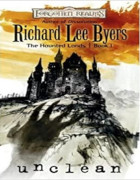
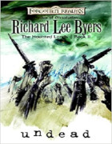
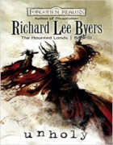
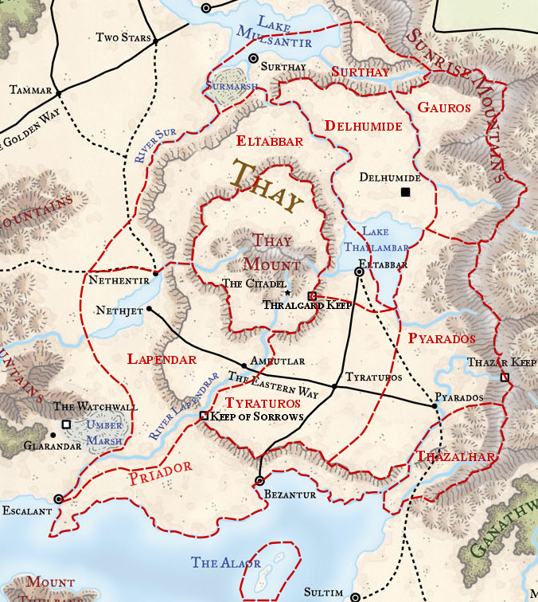

Romans de la série The Haunted Lands
Avant The Reaver, paru dans la série des 6 romans sur la Fracture, Richard Lee Byers a écrit entre 2007 et 2009 une saga de 3 romans publiés par Wizards of the Coast, centrée sur le Thay et la liche Szass Tam, dans les Royaumes Oubliés. Notez bien que ces romans se passent donc avant la Fracture et D&D 5.
♦
Unclean. 1375. Le Thay est sous pression. Le zulkir Druxus Rhym est assassiné, puis le même sort est réservé au zulkir Aznar Thrul ; la Rashménie aurait des velléités d'invasion au nord ; une horde de morts-vivants prend la forteresse de Thazar Keep à l'est ; et la rue commence à se rebeller. Szass Tam demande alors au conseil de le nommer régent, avec les pouvoirs que cela implique, le temps pour lui de sauver la nation. Y parviendra-t-il ? En parallèle, plusieurs héros luttent contre ces menaces : le barde Bareris Anskuld qui vient juste de revenir à Bezantur et qui est à la recherche de sa bien aimée, vendue comme esclave à des Magiciens rouges nécromants ; le magicien de guerre Aoth Fezim, capitaine de la légion des griffons de Pyarados, qui était à la bataille de Thazar Keep ; ou bien encore Malark Springhill, espion et homme de main de Dmitra Flass, tarchionnesse d'Eltabbar.
Avis : Dès l'introduction, de nombreux personnages apparaissent, sans grande présentation. En effet, l'auteur ne se perd pas dans de longues descriptions inutiles, le rythme semble être primordial et l'action est permanente. Je suis séduit, mais pas surpris, car le roman de cet auteur dans la série The Sundering était mon préféré.
Undead. 1385. Depuis 10 ans, Szass Tam, avec le soutien de quelques tharchions, est en guerre contre tous les autres zulkirs. Le statu-quo semble plus ou moins établi entre le nord et le sud, jusqu'à la mort de Mystra qui déclenche la Magepeste et fait exploser l'orbe de la Lune morte au visage de la liche. Szass Tam, personnellement affaibli, subit en conséquences plusieurs défaites sur les champs de batailles. Mais il parvient ensuite à faire passer de son côté l'un des trois héros du camp adverse, et invoque Baine afin que le dieu lui octroie plus de pouvoir. Le rapport de force se renverse alors drastiquement et les quatre zulkirs encore en vie décident de fuir en exil jusqu'à Escalant. Puis le nouveau régent du Thay entre triomphalement dans Bezantur avec à ses côtés Homen Odesseiron et Azhir Kren, et fait du grand prêtre de Baine Zekith Shezim le nouvel autharch de cette ville.
Avis : À la différence du premier tome, qui proposait une juste répartition entre l'histoire générale du Thay et celle particulière des héros, cet opus s'attarde plus sur les héros. Or comme c'est essentiellement des infos sur la politique du Thay que je cherchais, le livre m'a paru dans sa première moitié un peu ennuyeux. Heureusement, dans la seconde partie du récit, l'histoire reprend de la hauteur.
Unholy. 1478. Les quatres zulkirs survivants, Aoth, Bareris et Malark ne souffrant pas, pour différentes raisons, des effets de l'âge, tous se retrouvent près d'un siècle après la prise de contrôle du Thay par Szass Tam lorsque le barde leur annonce avoir connaissance que la liche a mis la main sur un rituel qui pourrait lui permettre de détruire le monde entier et d'en façonner un nouveau à sa manière. Aoth, maintenant à la tête de la fraternité du Griffon en Aglarond, va alors demander aux 15 membres du conseil de Simbarch d'intervenir, mais ceux-ci ne pensent qu'à reprendre le Wizard's Reach aux zulkirs en exil. Ces derniers, par contre, prennent la menace au sérieux et décident de détruire l'une des forteresses nécessaires à Szass pour exécuter le rituel. Puis le petit groupe se rend jusqu'à la Citadelle pour tuer la liche, qui est trahie à son tour.
Avis : J'ai eu très peur ! Jusqu'au dernier chapitre j'ai vraiment craint de lire une fin banale et prévisible comme dans les romans de Salvatore. Mais non, l'auteur a selon moi bien maîtrisé la conclusion de sa série. Une trilogie finalement très intéressante pour connaitre le Thay plus en détail, avec en prime beaucoup d'action. Merci monsieur Lee Byers.
♦
Le Thay à partir de 1375
Le Thay est divisé en 11 régions politiques, appelées tharchs, chacune dirigée par un tharchion. Le dirigeant d'une ville à le titre d'autharch. Dernièrement le pays s'est converti à une politique commerciale et pacifique avec ses voisins. Sous l'ère des zulkirs la capitale était Eltabbar, mais depuis 1385 le régent est installé à la Citadelle, au centre du pays dans le Thay Mount.
| Tharch | Tharchion |
|---|---|
| Alaor | Thessaloni Canos |
| Delhumide | Invarri Metron |
| Eltabbar | Dmitra Flass († 1385 assassinée) |
| Gauros | Azhir Kren |
| Lapendrar | Hezass Nymar |
| Priador | Aznar Thrul († 1375 assassiné) → Samas Kul († 1478) |
| Pyarados | Nymia Focar |
| Surthay | Homen Odesseiron |
| Thay Mount | Pyras Autorian († 1385 sacrifié lors de l'invocation de Baine par Szass) |
| Thazalhar | Milsantos Daramos († 1382 de mort naturelle) |
| Tyraturos | Dimon († 1385 lors d'une apparition de Baine devant les zulkirs) |
Le conseil des zulkirs à partir de 1375
Le véritable pouvoir de cette nation était jusqu'en 1385 détenu par le conseil des huit Magiciens rouges, chacun représentant une école de magie. Portant le titre de zulkir, élus à vie, ce sont eux qui nommaient les tharchions par exemple. Mais depuis la proclamation de Szass Tam en tant que régent du Thay, celui-ci gouverne seul. Les quatre zulkirs qui s'étaient enfuis en exil mourront finalement en 1478 lors d'un affrontement contre la liche.
| École | Zulkir |
|---|---|
| Abjuration | Lallara († 1478 en combattant Szass) |
| Divination | Yaphyll († 1385 mais exclue auparavant pour soutenir Szass) |
| Enchantement | Lauzoril († 1478 en combattant Szass) |
| Évocation | Aznar Thrul († 1375 assassiné) → Kumed Hahpret († 1385 dans un accident) |
| Illusion | Mythrellan († 1375) → Dmitra Flass († 1385 assassinée) |
| Invocation | Nevron († 1478 en combattant Szass) |
| Nécromancie | Szass Tam (exclu) → Zola Sethrakt († 1385 en combat) |
| Transmutation | Druxus Rhym († 1375 assassiné) → Samas Kul († 1478 en combattant Szass) |
